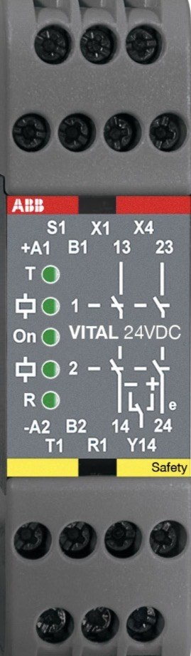

السيفتي PLC · الدرس 5 من 9
الـ Vital 1 بيحل مشكلة: عندك 10 أبواب و 5 طوارئ على الماكينة. بالـ RT9 محتاج 15 ريلاي. بالـ Vital 1 بتوصّلهم كلهم توالي على سلك واحد ولسه PL e.
الـ Vital بيطلّع من T1 نبضات (إشارة ديناميكية) بتعدّي على كل الحساسات واحد ورا التاني وترجع على R1.
أشهر حساس على لوب الـ Vital هو Eden، وهو قطعتين:
| لمبة Adam | المعنى |
|---|---|
| أخضر | Eva قريبة (الباب مقفول) والإشارة جاية من اللي قبله: كله تمام |
| أحمر | Eva بعيدة: الباب ده مفتوح |
| بيرمش أحمر/أخضر | الباب ده مقفول، بس الإشارة مش جاية من قبله: في حاجة مفتوحة قبله في اللوب |
T1 ← Adam 1 ← Adam 2 ← Adam 3 ← R1. كل Adam بيقلب الإشارة، يعني 3 قلبات = فردي، فـ S1 فاضي.
لو فتحت الباب 2: Adam 2 أحمر، و Adam 3 بيرمش (مقفول بس مستني إشارة)، و Adam 1 أخضر. على الـ Vital: T منوّرة و R مطفية. من غير ما تفتح ولا علبة عرفت إن الباب 2 هو اللي مفتوح.
4 Adam + زرار طوارئ Smile Tina (بيقلب هو كمان) = 5 قلبات = فردي، S1 فاضي. لو شلت الطوارئ من اللوب يبقوا 4 = زوجي، فلازم توصّل S1 مع B1، وإلا لمبة R هتفضل مطفية حتى والأبواب مقفولة.

| الطرف | وظيفته |
|---|---|
| A1 / A2 | باور 24V DC، وفيوز 3A في A1 |
| B1 / B2 | 24V للحساسات (+ و 0V)، محدود لـ 1.8A |
| T1 | خرج النبضات: أول اللوب |
| R1 | دخل النبضات: آخر اللوب |
| S1 | عدد الحساسات: زوجي = وصّل S1 مع B1، فردي = سيبه فاضي |
| X1 | الريست، وكونتاكتات مراقبة الكونتاكتورات |
| X4 | الريست الأوتوماتيك |
| 13-14 / 23-24 | خرجين أمان NO (كل واحد ريلايين توالي): 6A على 250V، و 2A AC-15 |
| Y14 | خرج معلومات بس (200 mA). ممنوع يتستخدم في الأمان |
من فوق لتحت: T ثم 1 ثم On ثم 2 ثم R.
| اللمبة | منوّرة | بترمش | مطفية |
|---|---|---|---|
| On | الباور تمام | أقل من 18V أو قصر | مفيش باور |
| T | النبضات طالعة من T1 | — | مفيش نبضات |
| R | النبضات راجعة صح على R1 | النبضات راجعة غلط (حساس بايظ) | مفيش حاجة راجعة: حساس مفتوح |
| 1 / 2 | الخرج شغال | — | الخرج فاصل |
الاستجابة: الفصل أقل من 48 مللي ثانية. وأقصى عدد مستحسن: 30 حساس Eden أو Tina على Vital واحد.
جرّب الـ Vital على المحاكي: افتح باب، اعمل قصر على حساس، وشوف لمبة R.
جاوب على 7 من 8 صح على الأقل عشان الدرس يتعلّم عليه.
الأرقام والأطراف هنا من كتالوجات ABB (Pluto Hardware Manual و Programming Manual و RT9). قبل ما تطبّق على ماكينة حقيقية ارجع للكتالوج وتقييم المخاطر بتاع الماكينة. تقدّمك بيتسجّل على الجهاز ده.
© LearnElectricals